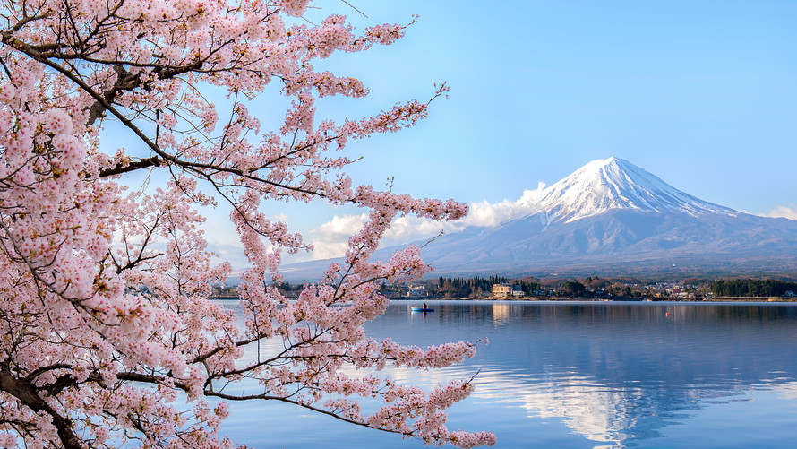

s
Японія - країна вранішнього сонця 
На сравнительно небольшой территории Японии прожива ет почти 130 млн человек (по этому показателю страна
занимает 10-е место в мире). Японцы по праву гордятся самой высокой в мире средней продолжительностью
жизни. Наперекор неблагоприятным природным условиям
Япония является всесторонне развитой мировой державой.
Полное название: Япония (ЫИгоп, Мгрроп) Территория: 377 800 км2 Столица: Токио Главные города: Иокогама, Нагоя, Осака, Киото, Кобэ, Китакюсю, Саппоро, Кавасаки, Фукуока Глава государства: император Акихито (с 1989 г.) Глава
правительства: премьерминистр Синдзо Абэ (с 2006 г.) Государственный строй: наследственная конституционная монархия Экспорт: продукция машиностроения и химической промышленности, оборудование, транспортные средства, электроника, современные
технологии, текстиль, чугун Денежная единица: иена Численность населения: 127,2 млн
Национальный состав: японцы, корейцы, китайцы, американцы Средняя продолжительность жизни: 79 лет (женщины 83, мужчины 76)
Естественный прирост населения: 0,3% Язык: японский Религии: синтоизм, буддизм, новые религии (смесь синтоизма, буддизма, даосизма, христианства, конфуцианства), христианство Неграмотность среди населения: 0% ВВП: $ 30 039 на душу населения
Япония
Общая длина хорошо развитой береговой линии Японии превышает 30 тыс. км. Почти 80% территории страны занимают низкие горы и плато, и только 10% — меридионально протяжённые высокогорные хребты, разделённые узкими тектоническими котловинами. Самый высокий
горный массив расположен в центральной части острова Хонсю. Тут находится высочайшая вершина Японии — вулкан Фудзияма (3776 м). Равнины, занимающие не более 10% общей площади страны, очень густо заселены и почти сплошь заняты под пахотные
угодья. На равнинах сосредоточены важнейшие промышленные регионы Японии.Южной Америки. Подземные силы приводят в движение литосферные плиты, на стыке которых лежит Япония, в результате в стране ежегодно регистрируется 1000—3000 толчков различной
силы. Около 20 из них ощущаютсялюдьми, а раз в несколько лет происходят катастрофические катаклизмы. Не меньшую опасность представляют подводные землетрясения, порождающие огромные волны цунами (высотой более 50 м). Накатываясь на берег, они
сметают всё на своём пути. Из почти 160 японских вулканов свыше 50 действующих и 20 спящих.Наиболее активны вулканы Асама, Бандай и Токати. В сентябре— октябре на берега Японии налетают мощные тайфуны (ок. 20 в год), принося ураганные ветры,
ливни и разрушительные паводки.

В плену стихий
Подземные силы приводят в движение литосферные плиты, на стыке которых лежит Япония, в результате в стране ежегодно регистрируется 1000—3000 толчков различной силы. Около 20 из них ощущаютсялюдьми, а раз в несколько лет происходят катастрофические катаклизмы.
Не меньшую опасность представляют подводные землетрясения, порождающие огромные волны цунами (высотой более 50 м). Накатываясь на берег, они сметают всё на своём пути. Из почти 160 японских вулканов свыше 50 действующих и 20 спящих.Наиболее
активны вулканы Асама, Бандай и Токати. В сентябре— октябре на берега Японии налетают мощные тайфуны (ок. 20 в год), принося ураганные ветры, ливни и разрушительные паводки.
Холодный север - Тёплый юг
В силу значительной протяжённости с севера на юг Японские острова расположены сразу в трёх климатических поясах: умеренном тёплом на севере, субтропическом в центре и тропическом на крайнем юге. На широтную поясность накладывается влажный муссонный климат,
охватывающий своим влиянием все острова ар- —ж хипелага. Во всей Японии, ЗГ*- за исключением Окинавы и островов Рюкю, наблюдается чётко выраженная смена четырёх времён года. Температура января варьирует от—6—10°С на Хоккайдо и —4—0°С в северной
и центральной части острова Хонсю до +6°С на Кюсю и 14—18°С на выдвинутых далеко к югу островах Рюкю. В летние месяцы, когда дует тёплый и влажный муссон с юго-востока, температурные различия в разных регионах менее выражены:от +28°С на юге
до 18—20°С на севере. По мере подъёма в горы температура независимо от времени года понижается в среднем на 0,6°С каждые 100 м. Климат в целом влажный. Среднегодовое количество осадков возрастает с севера на юг, составляя от 800—1500 мм на
Хоккайдо и Хонсю до 2000—3000 мм на архипелаге Рюкю. Дующий с океана летний муссон приносит обильные дожди на востоке и юге страны, тогда как зимний муссон, приходящий из глубин Азии, заваливает снегом весь северо-запад.
РАСТИТЕЛЬНЫЙ МИР
ПОТОМКИ ГОРДЫХ САМУРАЕВ
Гигант мировой экономики